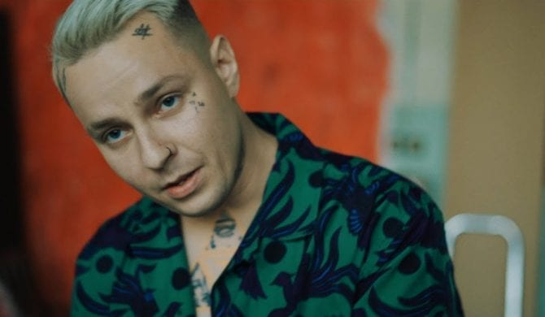

Tymek

Tymek lub Seven Phoenix, właściwie Tymoteusz Bucki (ur. jako Tymoteusz Polcar 28 października 1994 w Opolu) – polski autor utworów muzycznych i tekstów. Jego płyty oraz utwory wielokrotnie osiągały status Platynowych i Diamentowych płyt. Mając 5 lat, wyjechał wraz z matką do Włoch, po 10 latach wrócił do ojczystego kraju. W tym samym roku nagrał i wydał singiel „Język ciała”, zapowiadający album Klubowe, który nagrał w duecie z Big Scythe. Piosenka stała się krajowym przebojem, a zrealizowany do niej teledysk osiągnął wynik ponad 138 mln wyświetleń w serwisie YouTube. Utwór jest najpopularniejszą polskojęzyczną piosenką i zarazem także najpopularniejszym utworem polskiego artysty w serwisie Spotify z ponad 41 milionami odsłuchań. W 2019 roku osiągnął ponad 1 000 000 słuchaczy w serwisie Spotify, wyprzedzając Taco Hemingwaya. W 2020 wziął udział w charytatywnej akcji rapera Solara pt. #hot16challenge2, wydał dwa albumy studyjne: Fit i Piacevole oraz charytatywny minialbum Vestige. W 2021 roku jako pierwszy artysta wywodzący się z kultury hiphopowej w Polsce otrzymał podwójny diament za singiel „Język Ciała”. Sprzedał w Polsce ponad 60 tys. płyt.